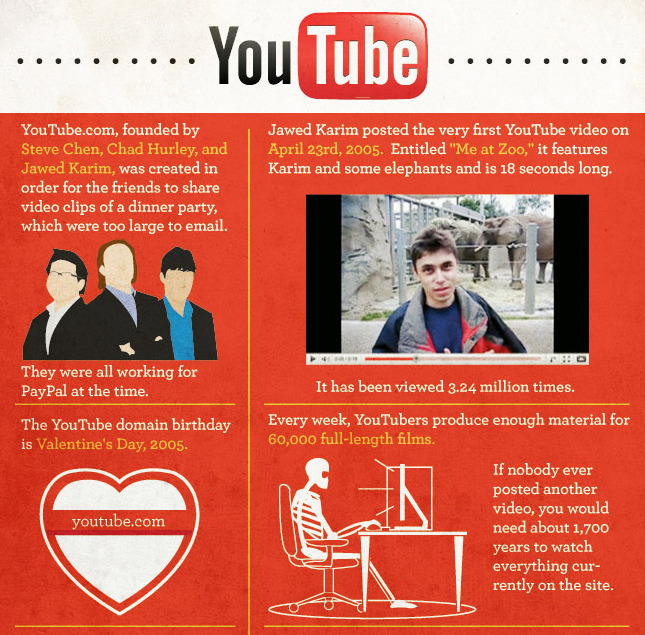

Wed, 01 Sep 2010 17:02:32 · infographic · YouTube
infographic everything you never needed to know

Infographic: Everything You Never Needed To Know About YouTube
~ Click here for more augmented view of this neat Infographic.
Wed, 01 Sep 2010 17:02:32 · infographic · YouTube

Infographic: Everything You Never Needed To Know About YouTube
~ Click here for more augmented view of this neat Infographic.